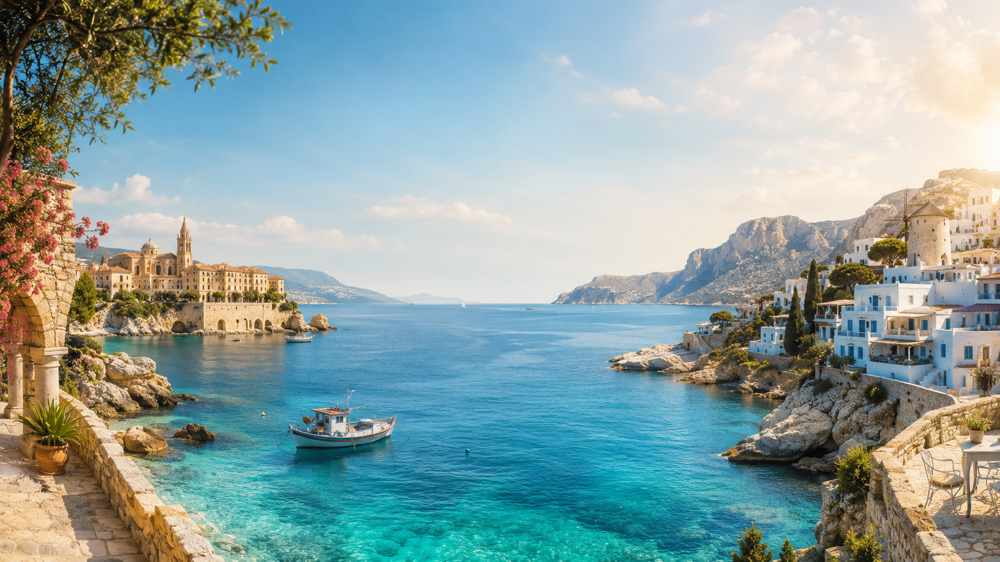

Späť na všetky kvízy
Interaktívny kvíz
Uhádnete najnečakanejšie miesta Stredomoria?
Púšť, sneh, ružové saliny, sopky aj jazykové ostrovy. Spoznáte ich už po prvej stope?
Stredomorie inak
Čaká vás viac než pláž a promenáda
Pri každom mieste uvidíte najprv iba jednu indíciu. Čím skôr ho spoznáte, tým viac bodov získate. Vybrali sme 15 prekvapivých zákutí krajín okolo Stredozemného mora.
- 15miest
- 3indície
- 45bodov max.
Bez registrácie. Najlepší výsledok sa uloží iba v tomto prehliadači.
Miesto 1 z 15
Ktoré miesto hľadáme?
Výsledok
Vaše stredomorské skóre
0 z 450 %
0 správne uhádnutých miest z 15
Prehľad odpovedí
Ako ste objavovali
Pokračujte v objavovaní
Najlepšie prekvapenia čakajú naživo.
Prejdite si články, videá a podcasty o miestach, ktoré vás v kvíze zaujali.